BỆNH CƠ TIM TRÊN ĐIỆN TÂM ĐỒ
11.1. Bệnh cơ tim giãn (DCM) — ECG
Bệnh cơ tim giãn (dilated cardiomyopathy – DCM)
Bệnh cơ tim
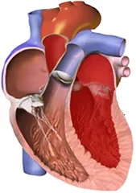
- Bệnh cơ tim (cardiomyopathy – CMP) là một nhóm bệnh chủ yếu ảnh hưởng đến cơ tim
- Chúng ta phân biệt 3 thể bệnh cơ tim chính:
- Bệnh cơ tim giãn là tình trạng giãn chủ yếu ở thất trái
- Bệnh cơ tim phì đại đặc trưng bởi phì đại chủ yếu ở vách liên thất
- Bệnh cơ tim hạn chế có đặc điểm là cơ tim cứng, "xơ hoá cứng"
- Đôi khi bệnh cơ tim còn bao gồm:
- Loạn sản thất phải gây rối loạn nhịp đặc trưng bởi sự thay thế cơ thất phải bằng mô mỡ
- Bệnh cơ tim Takotsubo xảy ra ở phụ nữ trong tình trạng stress,
dẫn đến tăng động vùng đáy và vô động vùng mỏm tim
Cơ tim sinh lý
- Các thất có kích thước bình thường
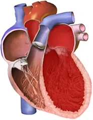
Bệnh cơ tim giãn
- Là tình trạng giãn chủ yếu ở thất trái
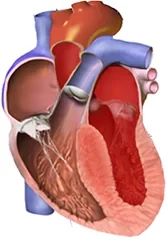
Bệnh cơ tim phì đại
- Là tình trạng phì đại chủ yếu ở vách liên thất
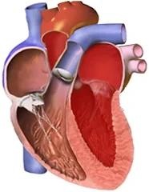
Bệnh cơ tim hạn chế
- Cơ tim cứng, "xơ hoá cứng"
Bệnh cơ tim giãn
- Đây là tình trạng giãn chủ yếu ở thất trái, đôi khi giãn cả thất phải
- Tim mất chức năng bơm, phân suất tống máu (ejection fraction) giảm xuống dưới 40%
- Nguyên nhân của bệnh cơ tim giãn:
- Nguyên nhân thiếu máu cục bộ (ischemic)
- Bệnh cơ tim giãn xuất hiện sau một nhồi máu thành trước diện rộng
- Nguyên nhân không do thiếu máu cục bộ (non-ischemic)
- Vô căn (idiopathic — phát sinh từ nguyên nhân không rõ)
- Di truyền (tính chất gia đình)
- Các nguyên nhân khác: nhiễm virus, rượu, bệnh tự miễn
- Nguyên nhân thiếu máu cục bộ (ischemic)
ECG và bệnh cơ tim giãn
- Bệnh cơ tim giãn (DCM) không có tiêu chuẩn chẩn đoán trên ECG
- ECG luôn bất thường trong DCM
- Chẩn đoán được xác lập bằng siêu âm tim
- Các biến đổi ECG thường gặp nhất trong bệnh cơ tim giãn
- Phì đại thất trái (các dấu hiệu phì đại trên ECG cũng xuất hiện khi buồng tim giãn)
- Block nhánh trái (Tawar) (thường gặp hơn block nhánh phải)
- Block nhánh phải (Tawar)
- Rối loạn dẫn truyền trong thất
- Sóng Q bệnh lý (V1-V4) (có thể giống nhồi máu cơ tim cũ)
- Giảm tiến triển sóng R (decreased R wave progression)
- Sóng T âm
- Nhịp nhanh thất (các thất bị biến đổi cấu trúc, tạo cơ chất cho nhịp nhanh)
- Block nhĩ thất độ I (giãn thất có thể làm tổn thương nút nhĩ thất)
- Phì đại nhĩ trái (quá tải cuối tâm trương của thất dẫn tới giãn nhĩ)
- Rung nhĩ (xuất hiện trên nhĩ đã biến đổi cấu trúc)
- Nhịp nhanh xoang (trong suy tim, trương lực giao cảm tăng)
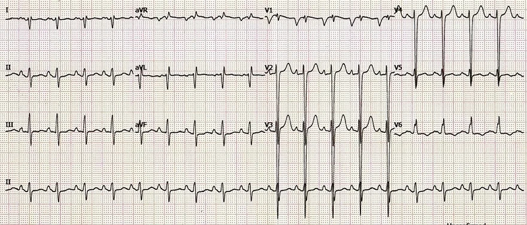
Bệnh cơ tim giãn
- Phì đại hai thất
- Phì đại thất trái (chỉ số Sokolow > 35mm)
- Phì đại thất phải (trục lệch phải)
- Phì đại cả hai nhĩ
- P mitrale (phì đại nhĩ trái) (sóng P ở V1 sâu hơn 1mm)
- P pulmonale (phì đại nhĩ phải) (sóng P ở DII khoảng 2.5mm)
- Bệnh nhân có giãn các nhĩ và các thất trên siêu âm tim
- Nguyên nhân của bệnh cơ tim giãn là bệnh tim thiếu máu cục bộ

Bệnh cơ tim giãn
- Phì đại thất trái (chỉ số Sokolow > 35mm)
- Tăng gánh thất trái (ST chênh xuống ở I, II, V5, V6)
- Phì đại cả hai nhĩ (biên độ dương và âm của sóng P ở V1 đều lớn)
- Bệnh nhân có giãn cả các nhĩ và các thất trên siêu âm tim
- Phì đại thất phải bị che lấp bởi phì đại thất trái trên ECG
- Bệnh nhân có bệnh cơ tim giãn vô căn
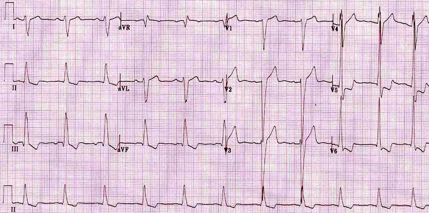
Bệnh cơ tim giãn
- Phì đại thất trái (chỉ số Sokolow > 35mm)
- Phì đại thất phải (trục lệch phải)
- Dẫn truyền trong thất kéo dài (QRS rộng > 0.12s)
- Sóng Q nhỏ (V5-6) loại trừ block nhánh trái
- ST chênh xuống nghịch hướng (discordant) (II, III, aVF, V5, V6) có thể gặp trong
- Tăng gánh thất trái
- Dùng digoxin
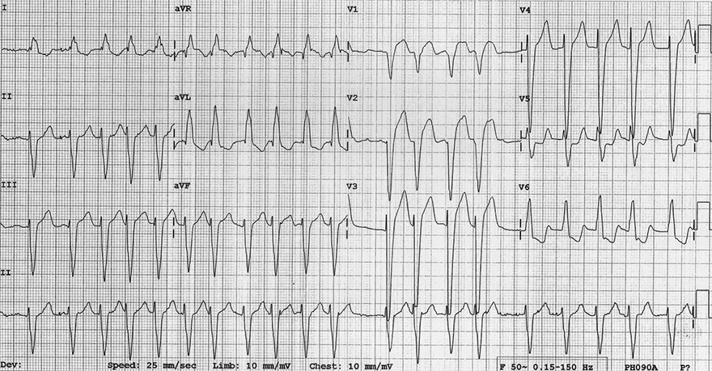
Bệnh cơ tim giãn
- Phì đại thất trái (chỉ số Sokolow > 35mm)
- Tăng gánh thất trái (ST chênh xuống ở aVL, V5, V6)
- Block phân nhánh trái trước (trục lệch trái)
- Rung nhĩ
- Không thấy sóng P
- Tần số tim không đều một cách không có quy luật
- Block nhánh trái
- Phức bộ QRS rộng > 0.12s
- S sâu (V1), R ưu thế (V6)
11.2. Bệnh cơ tim phì đại (HCM) — ECG
Bệnh cơ tim phì đại (hypertrophic cardiomyopathy – HCM), bệnh cơ tim phì đại tắc nghẽn (hypertrophic obstructive cardiomyopathy – HOCM), hẹp dưới van động mạch chủ phì đại vô căn (idiopathic hypertrophic subaortic stenosis)
Bệnh cơ tim
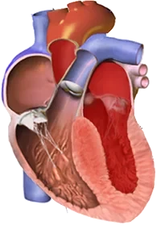
- Bệnh cơ tim (CMP) là một nhóm bệnh chủ yếu ảnh hưởng đến cơ tim
- Bệnh cơ tim phì đại (HCM)
- Tần suất khoảng 1/500 người, đây là một trong những bệnh tim bẩm sinh thường gặp nhất
- Đây là tình trạng phì đại cơ tim không tương xứng, thường gặp nhất là ở thất trái
- Phì đại không có nguyên nhân huyết động (tăng áp lực, hẹp van động mạch chủ)
- Về sinh lý, thất trái có bề dày tới 12mm
- Trong HCM, bề dày có thể lên tới 60mm
- HCM thường gặp nhất với 2 thể:
- Phì đại không đối xứng của vách liên thất
- Phì đại vùng mỏm (phì đại mỏm tim)
- Thành cơ tim phì đại là một cơ chất gây rối loạn nhịp
- Có nguy cơ rối loạn nhịp thất ác tính
- Rối loạn nhịp thường được khởi phát bởi gắng sức thể lực
- 50% các trường hợp HCM có yếu tố di truyền
- Đã biết khoảng 150 đột biến gen liên quan đến HCM
- Đôi khi được gọi là bệnh cơ tim phì đại tắc nghẽn (HOCM)
- Tuy nhiên, 75% các trường hợp HCM không gây tắc nghẽn đường ra thất trái
Đột tử ở vận động viên
- Đột tử ở vận động viên thường gặp nhất là do
- Suy tim cấp do nhịp nhanh thất
- Tiến triển thành rung thất
- Suy tim cấp do nhịp nhanh thất
- Các nguyên nhân đột tử do tim thường gặp nhất ở người trẻ:
- Bệnh cơ tim phì đại
- Loạn sản thất phải gây rối loạn nhịp
- Hội chứng WPW
- Hội chứng QT dài
- Hội chứng Brugada
- Nhịp nhanh thất đa hình do catecholamine
- Bất thường bẩm sinh của động mạch vành (có thể dẫn tới nhồi máu cơ tim)
- Hội chứng Marfan (bệnh mô liên kết, dẫn tới bóc tách động mạch chủ)
ECG và bệnh cơ tim phì đại
- Bệnh cơ tim phì đại (HCM) không có tiêu chuẩn chẩn đoán đặc hiệu trên ECG
- ECG trong HCM luôn bất thường
- Chẩn đoán dựa trên siêu âm tim
- Các biến đổi ECG thường gặp nhất trong bệnh cơ tim phì đại
- Phì đại thất trái (và các biến đổi không đặc hiệu của đoạn ST và sóng T)
- Phì đại thất phải
- P mitrale (phì đại nhĩ trái) (do rối loạn chức năng tâm trương của thất trái trong HCM)
- P pulmonale (phì đại nhĩ phải)
- Sóng Q bệnh lý (do phì đại vách liên thất)
- Nằm ở các chuyển đạo bên (I, aVL, V5-V6) và các chuyển đạo dưới (II, III, aVF)
- Thường rộng < 40ms (không phải lúc nào cũng vậy)
- Sóng Q có thể giống nhồi máu cơ tim cũ
- Sóng Q sau nhồi máu có bề rộng > 40ms
- Hội chứng WPW (33% bệnh nhân HCM có hội chứng WPW)
- Các đột biến gen thường gây đồng thời cả hai bệnh lý
- Sóng T âm sâu (V2-V6)
- Xuất hiện trong HCM thể mỏm
- Tuy nhiên, thể HCM mỏm này rất hiếm
- Chủ yếu gặp ở Nhật Bản, chiếm khoảng 20% bệnh nhân HCM
- Nhịp nhanh thất
- Ngoại tâm thu thất
- Phì đại thất trái (và các biến đổi không đặc hiệu của đoạn ST và sóng T)
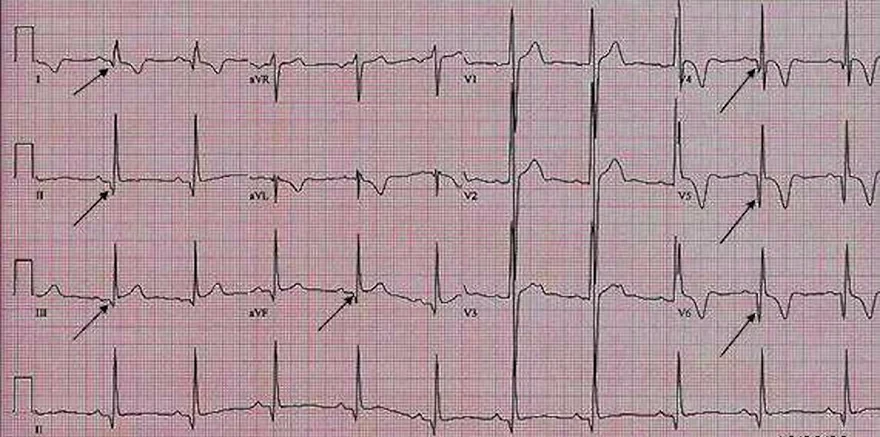
Bệnh cơ tim phì đại thể mỏm
- Sóng Q bệnh lý
- Ở các chuyển đạo dưới (II, III, aVF)
- Ở các chuyển đạo bên (I, V4-V6)
- Đặc trưng cho bệnh cơ tim phì đại
- Rộng hơn > 40ms; trong trường hợp này đây không phải nhồi máu, mà là HCM
- Phì đại thất trái
- Chỉ số Sokolow > 35mm
- Sóng T âm (V4-V6)
- Gợi ý HCM thể mỏm
- Bệnh nhân có bệnh cơ tim phì đại trên siêu âm tim
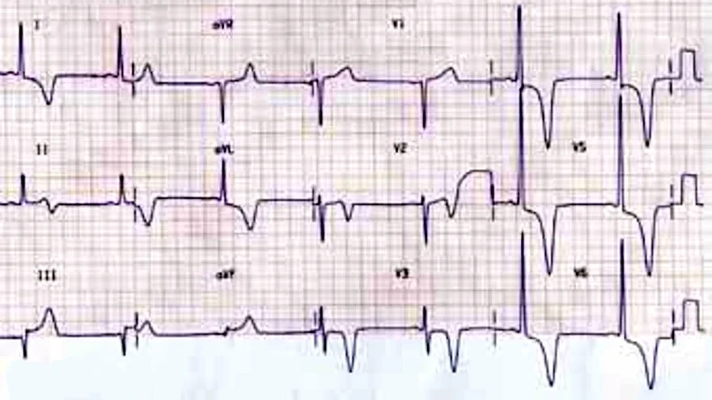
Bệnh cơ tim phì đại thể mỏm
- Phì đại thất trái
- Chỉ số Sokolow > 35mm
- Sóng T âm sâu (V2-V6)
- Gợi ý HCM thể mỏm
- Sóng T sâu tương tự — sóng T "não" (cerebral T wave) — cũng có thể gặp trong tăng áp lực nội sọ
- Bệnh nhân có bệnh cơ tim phì đại trên siêu âm tim
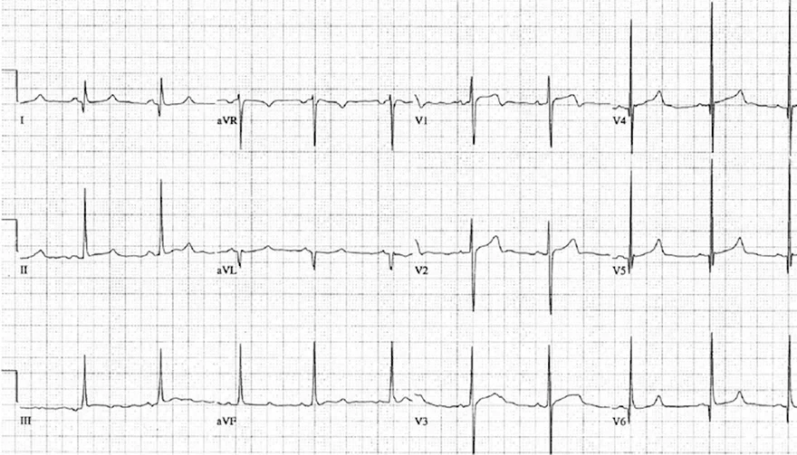
Bệnh cơ tim phì đại thể vách
- Phì đại thất trái
- Chỉ số Sokolow > 35mm
- Sóng Q bệnh lý
- Rộng < 40ms, ở các chuyển đạo bên (I, aVL, V5-V6)
- Bệnh nhân 30 tuổi, khả năng có nhồi máu cơ tim cũ là rất thấp
- Bệnh nhân tử vong do suy tim đột ngột vì rung thất
- Tử thiết cho thấy bệnh cơ tim phì đại thể vách
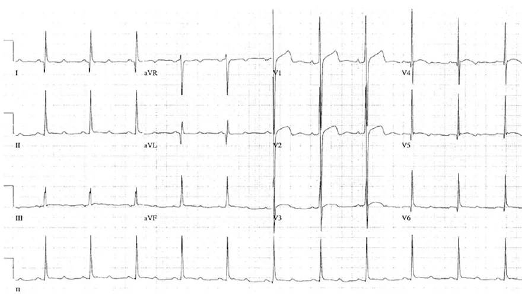
Bệnh cơ tim phì đại thể vách
- Phì đại thất trái
- Chỉ số Sokolow > 35mm
- Sóng Q bệnh lý
- Rộng < 40ms, ở các chuyển đạo bên (I, aVL, V5-V6)
- Bệnh nhân có bệnh cơ tim phì đại trên siêu âm tim
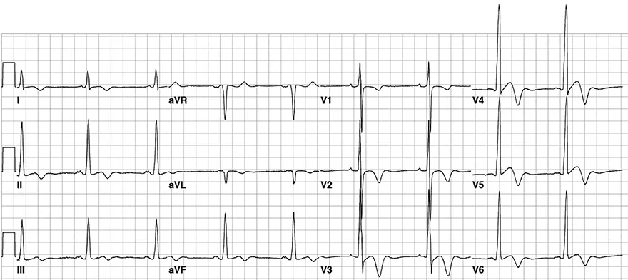
Bệnh cơ tim phì đại thể mỏm
- Phì đại thất trái
- Chỉ số Sokolow > 35mm
- P mitrale (phì đại nhĩ trái)
- Sóng P hai đỉnh (chuyển đạo II)
- Sóng T âm sâu (V2-V6)
- Gợi ý HCM thể mỏm
- Sóng T âm sâu tương tự cũng có thể gặp trong tăng áp lực nội sọ
- Bệnh nhân có bệnh cơ tim phì đại trên siêu âm tim
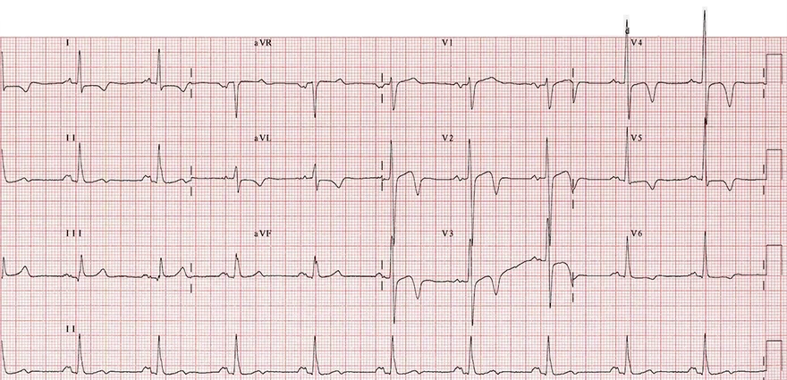
Bệnh cơ tim phì đại thể mỏm
- Phì đại thất trái
- Chỉ số Sokolow > 35mm
- P mitrale (phì đại nhĩ trái)
- Sóng P hai đỉnh (chuyển đạo II)
- Sóng T âm sâu (V2-V5)
- Gợi ý HCM thể mỏm
- Sóng T sâu tương tự cũng có thể gặp trong tăng áp lực nội sọ
- Bệnh nhân có bệnh cơ tim phì đại trên siêu âm tim
11.3. Bệnh cơ tim hạn chế — ECG
Bệnh cơ tim hạn chế (restrictive cardiomyopathy)
Bệnh cơ tim
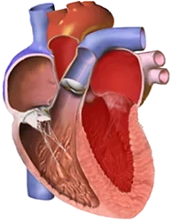
- Bệnh cơ tim (CMP) là một nhóm bệnh chủ yếu ảnh hưởng đến cơ tim
- Bệnh cơ tim hạn chế (RCM)
- Đây là thể bệnh cơ tim hiếm gặp nhất
- Xuất hiện trong các bệnh thâm nhiễm:
- Amyloidosis (lắng đọng protein)
- Hemochromatosis (lắng đọng sắt)
- Sarcoidosis (lắng đọng các tế bào và phân tử của hệ miễn dịch)
- Các chất lắng đọng trong tim (sắt, protein, phân tử) hoạt động như chất cách điện
- Do đó, điện thế của các phức bộ QRS sẽ giảm
- Tim trở nên cứng "xơ hoá" (biến đổi cấu trúc)
ECG và bệnh cơ tim hạn chế
- Bệnh cơ tim hạn chế (RCM) không có tiêu chuẩn chẩn đoán trên ECG
- ECG luôn bất thường trong RCM
- Chẩn đoán được xác lập bằng siêu âm tim
- Các biến đổi ECG thường gặp nhất trong bệnh cơ tim hạn chế
- Điện thế QRS thấp (các chất trong tim: sắt, protein, phân tử, hoạt động như chất cách điện)
- Biến đổi không đặc hiệu của đoạn ST và sóng T
- Rối loạn hệ thống dẫn truyền
- Block nhánh (Tawar)
- Block nhĩ thất
- Sóng Q bệnh lý
- Trong sarcoidosis, các u hạt hình thành trong tim và làm thay đổi vector khử cực thất
- Tim bị biến đổi cấu trúc, có thể dẫn tới:
- Rối loạn nhịp thất
- Rối loạn nhịp trên thất
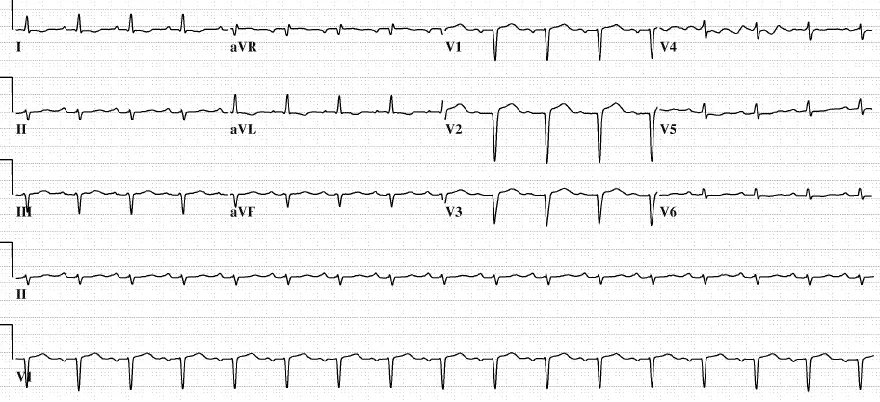
Bệnh cơ tim hạn chế
- Điện thế ECG thấp (I, II, aVR, V4, V5, V6)
- Các biến đổi không đặc hiệu:
- Sóng T dẹt
- ST chênh lên (V1-V3)
- Sóng Q bệnh lý (V1-V3)
- Các biến đổi không đặc hiệu và sóng Q bệnh lý cũng có thể gợi ý nhồi máu cơ tim
- Bệnh nhân có sarcoidosis, và siêu âm tim xác nhận bệnh cơ tim hạn chế
- Bệnh nhân không có nhồi máu cơ tim
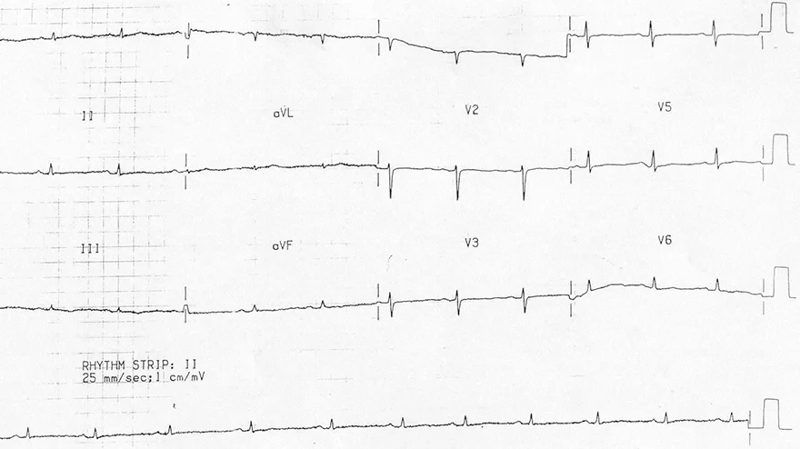
Bệnh cơ tim hạn chế
- Điện thế QRS thấp (ở tất cả các chuyển đạo)
- Các biến đổi không đặc hiệu:
- Sóng T dẹt
- Bệnh nhân có bệnh cơ tim hạn chế trên siêu âm tim
11.4. Bệnh cơ tim Takotsubo — ECG
Bệnh cơ tim Tako-tsubo (tako-tsubo cardiomyopathy), hội chứng trái tim tan vỡ (broken heart syndrome), bệnh cơ tim do stress (stress cardiomyopathy), hội chứng phình mỏm tim (apical ballooning syndrome)
Takotsubo
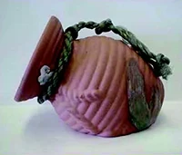
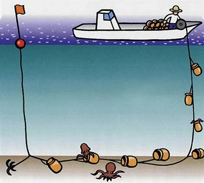
- Ngư dân Nhật Bản bắt bạch tuộc
- Trong những chiếc bình gọi là Takotsubo
- Chúng được buộc với nhau trên một sợi dây
- Bên trong có mồi
- Người ngư dân kéo dần sợi dây lên, trên đó có
- Những chiếc bình Takotsubo với bạch tuộc bên trong
Bệnh cơ tim Takotsubo
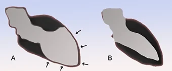
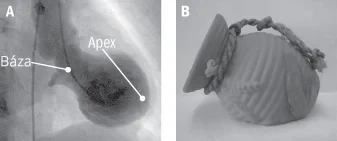
- Bệnh cơ tim (CMP) là một nhóm bệnh chủ yếu ảnh hưởng đến cơ tim
- Bệnh cơ tim Takotsubo (TTC)
- TTC được các bác sĩ Nhật Bản mô tả lần đầu tiên, khi họ nhận thấy thất trái trông giống một chiếc Takotsubo (bình) trên chụp buồng thất (ventriculography)
- Bệnh rất hiếm gặp (tỷ lệ hiện mắc khoảng 0.02%)
- 80% tổng số ca TTC xảy ra ở phụ nữ sau mãn kinh
- Bệnh xuất hiện trong tình trạng stress cực độ (người thân qua đời, ly hôn, khó khăn trong công việc, v.v.)
- Có giãn vùng mỏm và tăng co bóp vùng đáy thất trái
- Vùng mỏm giảm động và vùng đáy tăng động
- Có những thể rất hiếm (mỏm tăng động và đáy vô động, hoặc toàn bộ thất trái giảm động)
- Thông thường, thất trái tự trở về bình thường trong vòng 4-6 tuần; không có điều trị đặc hiệu
- Có nguy cơ nhịp nhanh thất ác tính và vỡ thất trái
- (A) Bệnh cơ tim Tako Tsubo
- Giảm động và giãn vùng mỏm
- Tăng động vùng đáy
- (B) Thất trái bình thường
- (A) Chụp buồng thất trái
- Giảm động và giãn vùng mỏm
- Tăng động vùng đáy
- (B) Takotsubo (bình bắt bạch tuộc)
- Chụp buồng thất
- Thất trái
Hội chứng trái tim tan vỡ
- Khi chia tay bạn đời, người ta có thể trải qua stress rất lớn
- Người ta nói rằng điều đó đã làm tan vỡ trái tim
- Nếu mắc TTC thì trái tim tan vỡ theo đúng "nghĩa đen"
- TTC đôi khi được gọi là hội chứng trái tim tan vỡ (broken heart syndrome)
Các bệnh cơ tim do stress
- Bệnh xuất hiện do giải phóng ồ ạt catecholamine, gắn vào cơ tim và thường gây ra
- Rối loạn vận động cơ tim
- Biến đổi ECG
- Các bệnh cơ tim do stress được biết đến nhiều nhất:
- Cơ tim choáng váng (stunned myocardium — neurogenic stunned myocardium)
- Bệnh cơ tim Takotsubo
- Cơ tim choáng váng (neurogenic stunned myocardium)
- Xuất hiện khi tăng áp lực nội sọ cấp tính
- Norepinephrine được giải phóng từ các đầu tận thần kinh, chủ yếu gây
- Rối loạn vận động của hầu như toàn bộ thất trái
- Biến đổi ECG
- Kéo dài khoảng 2 tuần
- Bệnh cơ tim Takotsubo
- Xuất hiện khi stress cực độ mà không có tăng áp lực nội sọ
- Chủ yếu gặp ở phụ nữ sau mãn kinh
- Adrenaline được giải phóng vào tuần hoàn chủ yếu gây
- Rối loạn vận động chủ yếu ở vùng mỏm
- Biến đổi ECG
- Kéo dài khoảng 4-6 tuần
ECG và bệnh cơ tim Takotsubo
- ST chênh lên (ở các chuyển đạo trước tim)
- Sóng T và sóng U âm (ở các chuyển đạo trước tim)
- Khoảng QT kéo dài
- Có tăng nguy cơ xuất hiện xoắn đỉnh (Torsades de Pointes)
Bệnh cơ tim Takotsubo so với STEMI thành trước
- TTC thường biểu hiện với triệu chứng và hình ảnh ECG giống hệt STEMI thành trước
- TTC không có hẹp (> 50%) trên chụp mạch vành
- TTC không có tăng các dấu ấn sinh học của hoại tử cơ tim (troponin, CK, CK-MB)
- TTC không gây hoại tử cơ tim như STEMI
- Giảm động vùng mỏm trong TTC không tương ứng với vùng cấp máu của một mạch máu nhất định
- STEMI thành trước do tắc động mạch liên thất trước (LAD) gây giảm động phần thành trước mà LAD cấp máu
- STEMI không gây giảm động toàn bộ vùng mỏm
- Vì vùng mỏm được nhiều mạch máu cấp máu và việc chúng cùng lúc hẹp/tắc là khó xảy ra
- TTC gây giảm động toàn bộ vùng mỏm, và vùng mỏm này vượt quá phạm vi cấp máu của một mạch máu đơn lẻ
- STEMI thành trước do tắc động mạch liên thất trước (LAD) gây giảm động phần thành trước mà LAD cấp máu
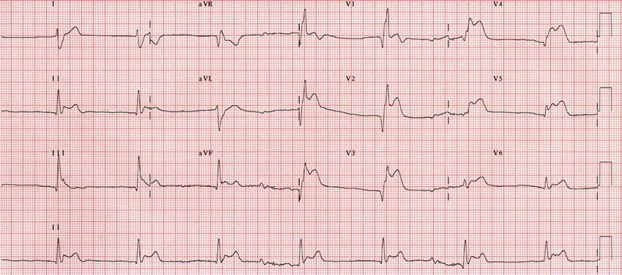
Bệnh cơ tim Takotsubo
- Bệnh nhân sau mãn kinh đang trải qua một giai đoạn căng thẳng
- Đột ngột xuất hiện đau ngực
- ECG cho hình ảnh STEMI thành trước
- ST chênh lên (V2-V6)
- Chụp mạch vành cho thấy không có hẹp động mạch vành
- Các dấu ấn sinh học đặc hiệu tim của hoại tử cơ tim (troponin, CK, CK-MB) bình thường
- Siêu âm tim cho thấy vô động vùng mỏm và tăng động vùng đáy thất trái
- Bệnh nhân có bệnh cơ tim Takotsubo chứ không phải STEMI thành trước
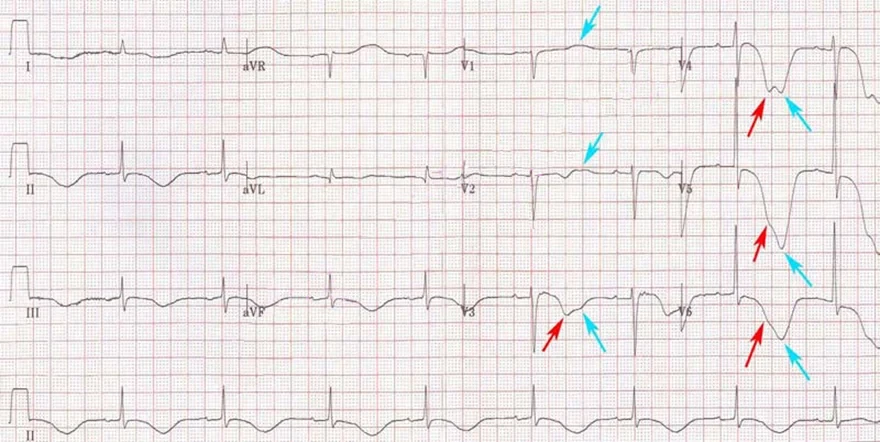
Bệnh cơ tim Takotsubo
- Bệnh nhân sau mãn kinh đang trải qua một giai đoạn căng thẳng
- Đột ngột xuất hiện đau ngực
- Khoảng QT kéo dài (0.64s)
- Sóng T rộng và âm (I, II, III, aVF, V2-6) - mũi tên đỏ
- Sóng U (V1-6) - mũi tên xanh dương - làm biến dạng phần cuối của các sóng T
- Chụp mạch vành cho thấy không có hẹp động mạch vành
- Các dấu ấn sinh học đặc hiệu tim của hoại tử cơ tim (troponin, CK, CK-MB) bình thường
- Siêu âm tim cho thấy vô động vùng mỏm và tăng động vùng đáy thất trái
- Bệnh nhân có bệnh cơ tim Takotsubo
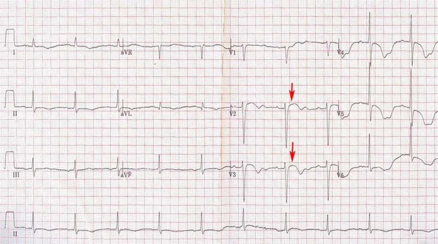
Bệnh cơ tim Takotsubo
- Bệnh nhân sau mãn kinh đang trải qua một giai đoạn căng thẳng
- Đột ngột xuất hiện đau ngực
- ST chênh lên (V2-V3) - mũi tên đỏ
- Sóng T âm (V2-6)
- Sóng T dẹt - âm ở các chuyển đạo chi
- Chụp mạch vành cho thấy không có hẹp động mạch vành
- Các dấu ấn sinh học đặc hiệu tim của hoại tử cơ tim (troponin, CK, CK-MB) bình thường
- Siêu âm tim cho thấy vô động vùng mỏm và tăng động vùng đáy thất trái
- Bệnh nhân có bệnh cơ tim Takotsubo
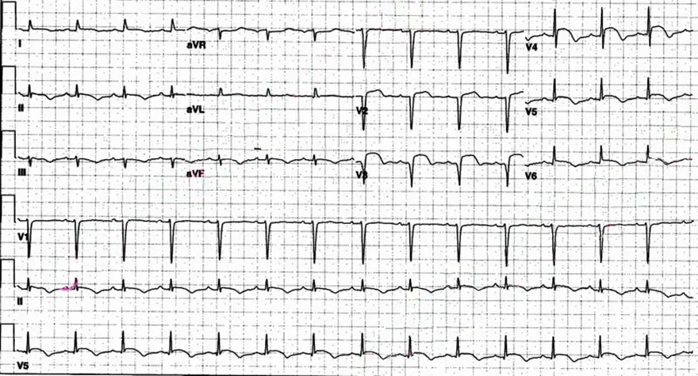
Bệnh cơ tim Takotsubo
- Bệnh nhân sau mãn kinh đang trải qua một giai đoạn căng thẳng
- Đột ngột xuất hiện đau ngực
- ECG cho hình ảnh của STEMI thành trước
- ST chênh lên (V2-V6)
- Chụp mạch vành cho thấy không có hẹp động mạch vành
- Các dấu ấn sinh học của hoại tử cơ tim đặc hiệu tim (troponin, CK, CK-MB) bình thường
- Siêu âm tim cho thấy vô động vùng mỏm và tăng động vùng đáy thất trái
- Bệnh nhân có bệnh cơ tim Takotsubo chứ không phải STEMI thành trước
11.5. Loạn sản thất phải gây rối loạn nhịp (ARVD) — ECG
Loạn sản (bệnh cơ tim) thất phải gây rối loạn nhịp — arrhythmogenic right ventricular dysplasia (cardiomyopathy)
Loạn sản thất phải gây rối loạn nhịp
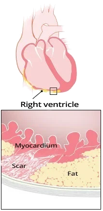
- Đây là một rối loạn di truyền bẩm sinh ảnh hưởng đến thất phải
- Bệnh dẫn tới xơ hoá (sẹo) và thâm nhiễm mỡ ở thất phải
- Thất phải khi đó có các đặc tính điện học bị biến đổi (điện thế hoạt động)
- Bệnh được gọi là loạn sản thất phải gây rối loạn nhịp (ARVD)
- Trên một thất đã biến đổi cấu trúc, rối loạn nhịp dễ xuất hiện:
- Ngoại tâm thu thất
- Nhịp nhanh thất từ đường ra thất phải
- Trên một thất đã biến đổi cấu trúc, rối loạn nhịp dễ xuất hiện:
- Cơ chế của rối loạn nhịp là vòng vào lại (re-entry)
- Bệnh thường được xếp vào nhóm bệnh cơ tim
- Bệnh gặp ở khoảng 1/5000 người.
- Bệnh gặp ở nữ nhiều gấp 3 lần nam (3:1)
- ARVD thường không có triệu chứng (bệnh nhân không có biểu hiện gì)
- Cần nghĩ đến bệnh nếu một bệnh nhân trẻ có:
- Hồi hộp đánh trống ngực
- Ngất (mất ý thức)
- Đột tử trong gia đình ở một người tương đối khoẻ mạnh
- Cần nghĩ đến bệnh nếu một bệnh nhân trẻ có:
- ARVD thường biểu hiện đầu tiên bằng đột tử do tim
- Do nhịp nhanh thất xuất hiện trong bối cảnh ARVD
- Nguyên nhân đột tử do tim thường gặp nhất ở người trẻ là:
- Bệnh cơ tim phì đại
- Loạn sản thất phải gây rối loạn nhịp
Các giai đoạn của ARVD
- Giai đoạn 1 (không triệu chứng)
- Bệnh nhân không có triệu chứng, không có rối loạn nhịp hay biến đổi cấu trúc tim
- Có những biến đổi tối thiểu trên ECG và trên các thăm dò hình ảnh (MRI, siêu âm tim)
- Ở giai đoạn này, các ổ ngoại vị và nhịp nhanh thất đã có thể xuất hiện trong thất
- Giai đoạn 2 (có triệu chứng)
- Bệnh nhân có biến đổi cấu trúc (xơ hoá và mỡ) ở thất phải
- Có ngoại tâm thu thất và các cơn nhịp nhanh tái diễn
- Xuất hiện ở người trẻ < 35 tuổi
- Giai đoạn 3 (suy tim)
- ARVD gây giãn thất phải (bệnh cơ tim giãn) và sau đó là suy tim
- Ở mọi giai đoạn đều có thể xuất hiện nhịp nhanh thất và đột tử do tim
Đột tử ở vận động viên
- Đột tử ở vận động viên thường gặp nhất
- Do suy tim đột ngột từ nhịp nhanh thất
- Tiến triển thành rung thất
- Do suy tim đột ngột từ nhịp nhanh thất
- Các nguyên nhân đột tử do tim thường gặp nhất ở người trẻ:
- Bệnh cơ tim phì đại
- Loạn sản thất phải gây rối loạn nhịp (ARVD)
- Hội chứng WPW
- Hội chứng QT dài
- Hội chứng Brugada
- Nhịp nhanh thất đa hình do catecholamine
- Bất thường bẩm sinh của động mạch vành (có thể gây nhồi máu cơ tim)
- Hội chứng Marfan (bệnh mô liên kết, dẫn tới bóc tách động mạch chủ)
Nhịp nhanh thất vô căn
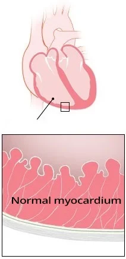
- Nhịp nhanh thất vô căn (idiopathic ventricular tachycardia)
- Xuất hiện trên một quả tim bình thường về cấu trúc
(không có rối loạn điện giải hay biến đổi khoảng QT)- 10% các trường hợp nhịp nhanh thất là vô căn
- 90% nhịp nhanh thất phát sinh trên một quả tim bất thường về cấu trúc
- Xuất hiện trên một quả tim bình thường về cấu trúc
- Trong nhịp nhanh thất vô căn, ổ ngoại vị bắt nguồn từ vùng:
- Các đường ra của thất
- Các phân nhánh của nhánh trái
- Chúng ta phân biệt 3 thể nhịp nhanh thất vô căn
- Nhịp nhanh thất từ đường ra thất phải
- Nhịp nhanh thất từ đường ra thất trái
- Nhịp nhanh thất phân nhánh (fascicular)
- Đặc điểm ECG của nhịp nhanh thất tương tự nhau ở:
- Nhịp nhanh thất vô căn từ đường ra thất phải
- Nhịp nhanh thất từ đường ra thất phải trong ARVD
- Nhịp nhanh thất vô căn từ đường ra thất phải
- Tim không biến đổi cấu trúc
- Cơ chế là hoạt động khởi kích (triggered activity)
- Cơn nhịp nhanh đáp ứng với adenosine
- Không thấy biến đổi trên ECG trong nhịp xoang
- Nhịp nhanh thất từ đường ra thất phải trong ARVD
- Tim có biến đổi cấu trúc
- Cơ chế là vòng vào lại (re-entry)
- Cơn nhịp nhanh không đáp ứng với adenosine
- Thấy biến đổi trên ECG trong nhịp xoang
ECG và loạn sản thất phải gây rối loạn nhịp
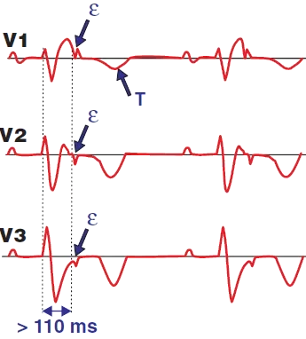
- Trong nhịp xoang, các biến đổi ở vùng thất phải (V1-V3) gồm:
- Sóng epsilon (ε) ở V1-V3 (30% bệnh nhân ARVD)
- Sóng T đảo ngược ở V1-V3 (85% bệnh nhân ARVD)
- Thời gian QRS > 110 ms ở V1-V3
- Block nhánh phải
- Nhánh lên của sóng S kéo dài > 55 ms
- (95% bệnh nhân ARVD)
- ARVD có thể biểu hiện vòng vào lại trong cơn nhịp nhanh thất:
- Vòng vào lại ở vùng thất phải:
- Hình ảnh block nhánh trái
- Trục lệch trái
- Vòng vào lại ở vùng đường ra thất phải:
- Hình ảnh block nhánh trái
- Trục tim hướng xuống dưới (inferior axis)
- Vòng vào lại ở vùng thất phải:
ECG và sóng epsilon (ε)
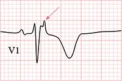
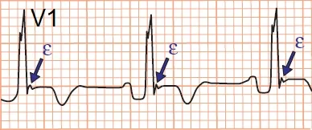
- Sóng epsilon là một sóng dương nhỏ ở cuối phức bộ QRS.
- Sóng này quan sát được ở các chuyển đạo "nhìn" vào thất phải (V1-V3)
- Sóng epsilon hiện diện ở 30% bệnh nhân ARVD
Loạn sản thất phải gây rối loạn nhịp
- Sóng epsilon (V1)
- Sóng T âm
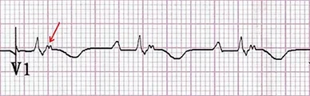
Loạn sản thất phải gây rối loạn nhịp
- Sóng epsilon (V1)
- Sóng T âm
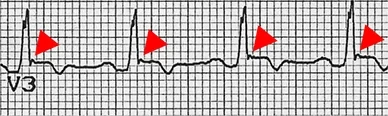
Loạn sản thất phải gây rối loạn nhịp
- Sóng epsilon (V3)
- Sóng T âm
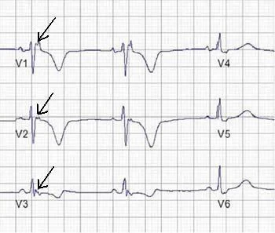
Loạn sản thất phải gây rối loạn nhịp
- Sóng epsilon (V1-V3)
- Sóng T âm
Loạn sản thất phải gây rối loạn nhịp
- Sóng epsilon (V1)
- Sóng T âm
Sóng T đảo ngược
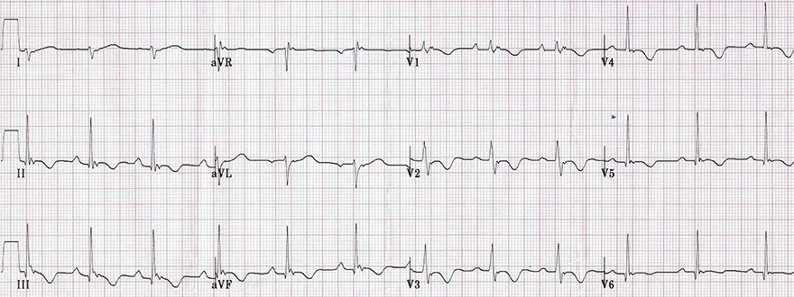
- 85% bệnh nhân ARVD có sóng T âm (V1-V3)
Loạn sản thất phải gây rối loạn nhịp
- Sóng epsilon ở tất cả các chuyển đạo
- Sóng T âm (V1-V3), và cả V4-6
- Phì đại và tăng gánh thất phải
- Tỷ lệ R/S (V1) ≥ 1
- Đoạn ST đi xuống và sóng T âm (V1-4)
(II, III, aVF)
Nhánh lên của sóng S kéo dài (>55ms)
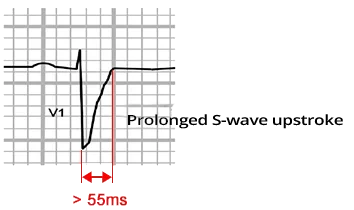
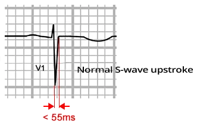
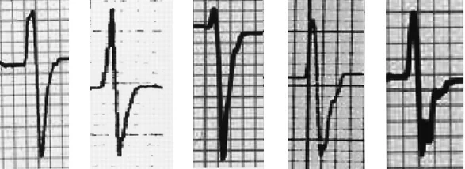
- Nhánh lên của sóng S (S wave upstroke) là khoảng thời gian từ đỉnh của sóng S (điểm thấp nhất — nadir of S wave) tới thời điểm sóng S về tới đường đẳng điện
- Trong ARVD, nhánh lên của sóng S dài hơn 55ms (hơn 1.5 ô nhỏ)
- 95% bệnh nhân ARVD có nhánh lên của sóng S kéo dài
- Sóng S là kết quả của quá trình khử cực phần đáy các thất
- Trong ARVD, thất phải bị biến đổi do thâm nhiễm xơ - mỡ và quá trình khử cực kéo dài hơn
- Do đó, nhánh lên của sóng S sẽ kéo dài, và kéo theo là phức bộ QRS cũng rộng hơn
Loạn sản thất phải gây rối loạn nhịp
- Trên ECG có thể thấy 6 phức bộ QRS
(từ các chuyển đạo V1-V3) - Mỗi phức bộ QRS đều có nhánh lên của sóng S kéo dài > 55ms (> 1.5 ô)
- (một ô nhỏ là 40ms)
QRS giãn rộng (>110ms)
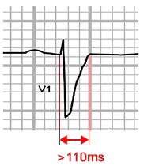
- Đó là do nhánh lên của sóng S kéo dài
- Hệ quả là phức bộ QRS cũng giãn rộng >110ms ở V1-V3
- (>2.5 ô nhỏ)
Loạn sản thất phải gây rối loạn nhịp
- Trên ECG thấy 6 phức bộ QRS (từ các chuyển đạo V1-V3)
- Mỗi phức bộ QRS đều có nhánh lên của sóng S kéo dài > 55ms (> 1.5 ô nhỏ)
- Mỗi phức bộ QRS đều > 110ms
(>2.5 ô nhỏ)
- Mỗi phức bộ QRS đều > 110ms
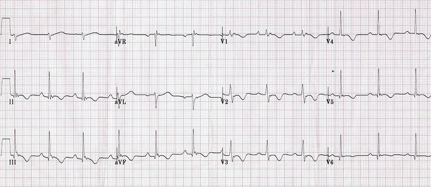
Loạn sản thất phải gây rối loạn nhịp
- Sóng epsilon (V1-V3)
- Sóng T đảo ngược (V1-V3)
- Nhánh lên của sóng S kéo dài > 55ms (V1-V3) (> 1.5 ô nhỏ)
- QRS giãn rộng > 110ms (V1-V3) (>2.5 ô nhỏ)
- Phì đại và tăng gánh thất phải
- Tỷ lệ R/S (V1) ≥ 1
- Đoạn ST đi xuống và sóng T âm (V1-4) (II, III, aVF)
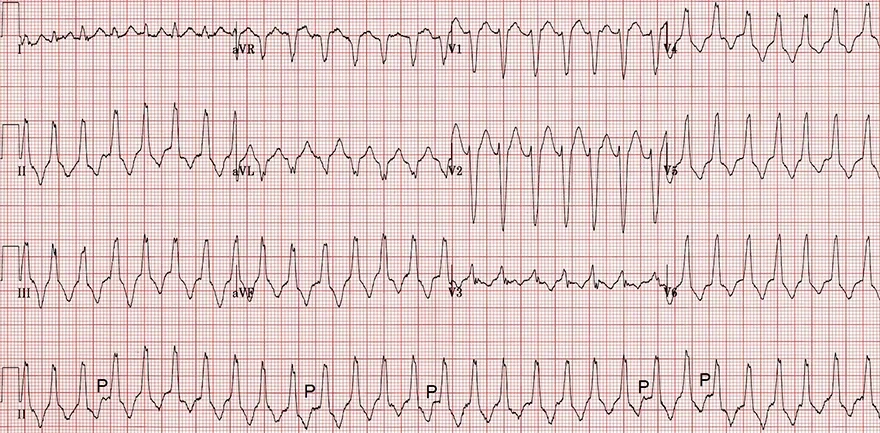
Nhịp nhanh thất từ đường ra thất phải
- Phức bộ QRS rộng (>0.12s)
- Tần số tim 160/phút.
- Vùng chuyển tiếp (V3)
- Vị trí của vùng chuyển tiếp giúp phân biệt nhịp nhanh thất từ đường ra phải và đường ra trái
- Hình ảnh block nhánh trái
- S sâu (V1)
- R ưu thế (V6)
- Phức bộ QRS rộng
- Trục thẳng đứng (+ 90°)
- QRS dương (II, III, aVF)
- Phân ly nhĩ thất
- Thấy các sóng P trên chuyển đạo II ghi liên tục, độc lập với các phức bộ QRS
- Phân ly nhĩ thất là một đặc điểm cơ bản của nhịp nhanh thất
- Đây có thể là nhịp nhanh thất vô căn từ đường ra thất phải
- Tuy nhiên, bệnh nhân có các dấu hiệu ECG của ARVD trong nhịp xoang
- ECG cho thấy nhịp nhanh thất từ đường ra kèm ARVD, không phải nhịp nhanh thất vô căn từ đường ra thất phải
Nguồn tài liệu (Sources)
Nguồn: ECG BOOK — www.ecgbook.com
- ECG from Basics to Essentials Step by Step
- Litfl.com
- Ecgwaves.com
- Metealpaslan.com
- Medmastery.com
- Uptodate.com
- Ecgpedia.org
- Wikipedia.org
- Strong Medicine
- Understanding Pacemakers
Bản dịch được thực hiện từ năm trang sau của ECG BOOK (www.ecgbook.com):
- Dilated Cardiomyopathy (DCM)
- Hypertrophic Cardiomyopathy (HCM)
- Restrictive Cardiomyopathy
- Takotsubo Cardiomyopathy
- Arrhythmogenic Right Ventricular Dysplasia (ARVD)